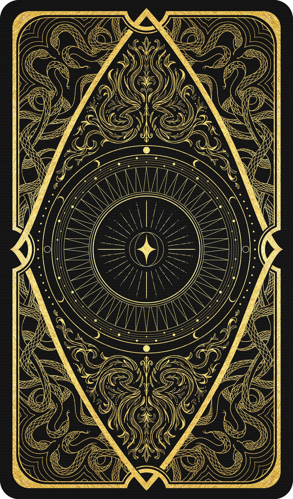

Método Ária
Descubra a energia do seu Arcano Regente Anual para 2027:
✨ Seu Arcano de 2027 foi calculado ✨
👆 Toque na carta abaixo para virar e revelar
Arcano Anual:

Arcano Complementar:
Segundo Arcano Complementar:
Matriz do Olimpo: Edição de Boas-Vindas - [Nome do Arcano] ✨
Deixa eu te falar [Nome], hoje, olhando para trás, eu consigo enxergar o TANTO de oportunidades que eu perdi na minha vida por não ter conhecimento do meu Arcano Anual. Claro, hoje, analisando e com todo o conhecimento que eu tenho, fica mais fácil pra mim enxergar isso.
Tanto que em 2024, o ano que eu estava sendo regida pelo Arcano da Imperatriz e o Enforcado, foi o ano que eu finalmente consegui bombar nas redes com o meu trabalho, ganhar milhões de visualizações em 1 ano, e embora eu tenha saído destruída de relações que eu estava, eu consegui mudar a minha vida e desbloquear meu potencial.
E é isso que eu quero para você em 2027, minha Alma Alma Divônica, ou seja, que este ano seja o SEU ANO, que você possa fazer do limão uma limonada e consiga aproveitar todas as oportunidades e lidar com os desafios com MUITO mais facilidade.
Se você souber o seu Arcano Regente Anual, e trabalhar essa energia, você verá o quanto seu ano será TRANSFORMADO. Não importa o Arcano, porque TODOS eles trazem suas oportunidades e desafios.
Meus Divônicos choram nos comentários todo ano dizendo que "Ah meu arcano é a Torre ano que vem, socorro Aria". Sim, não vou negar que pode ser beeem difícil se você não souber lidar com os desafios que poderão vir.
Agora se você souber, conhecer a energia e usar ela pra te IMPULSIONAR, até no "pior Arcano" que o pessoal aterroriza, você conseguirá extrair o MELHOR dessa energia para o seu ano.
Querendo ou não, Arcano Regente Anual é um limão que a espiritualidade te dá. Você pode sentir o gosto amargo e reclamar sobre isso o ano todo, ou fazer uma limonada deliciosa com ele.
✨ E como eu faço isso Aria? Como eu entendo melhor e de forma mais profunda a minha energia regente do ano que vem?
Comece pela minha Edição de Boas-Vindas sobre o seu Arcano Anual, que é um PDF profundo onde eu condensei anos de estudos, vivências e os segredos do seu Arcano Anual nesta Edição de Boas-Vindas.
Você e eu sabemos que você pode MUITO mais...